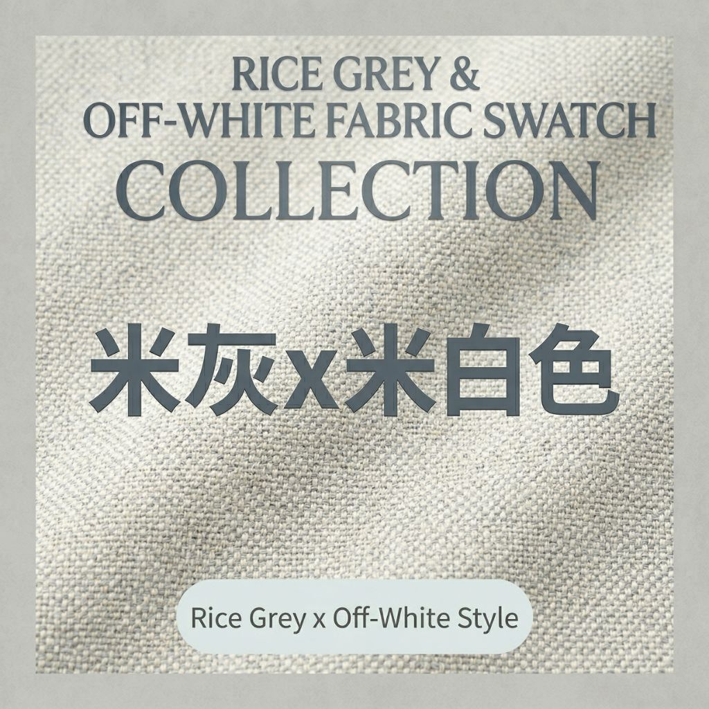
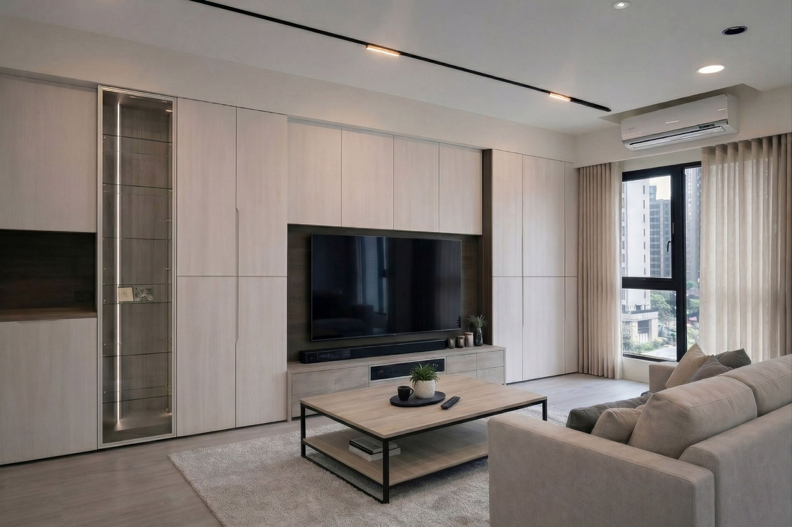
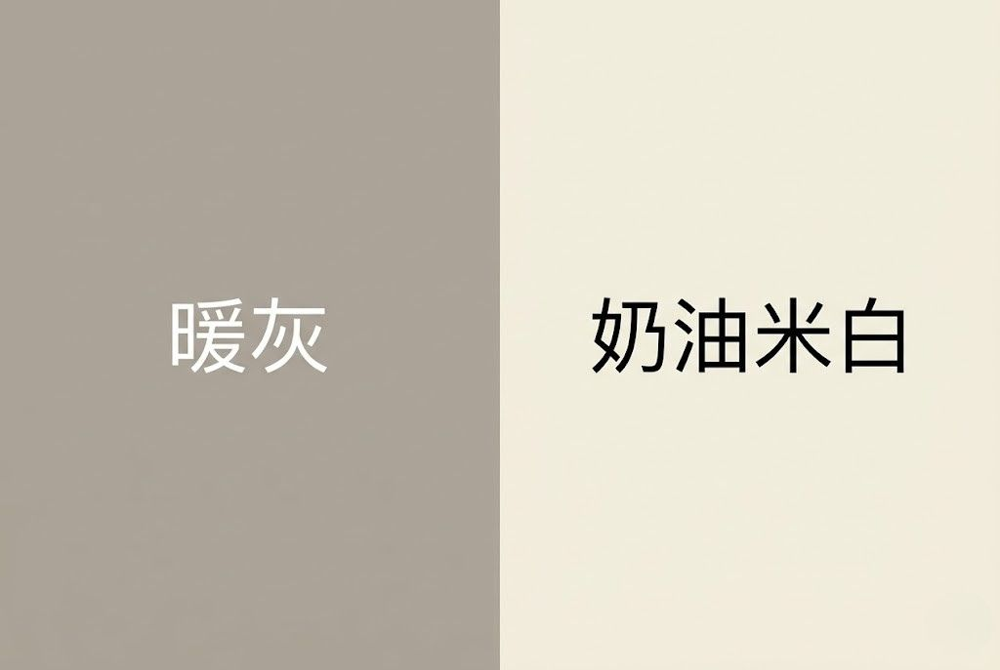
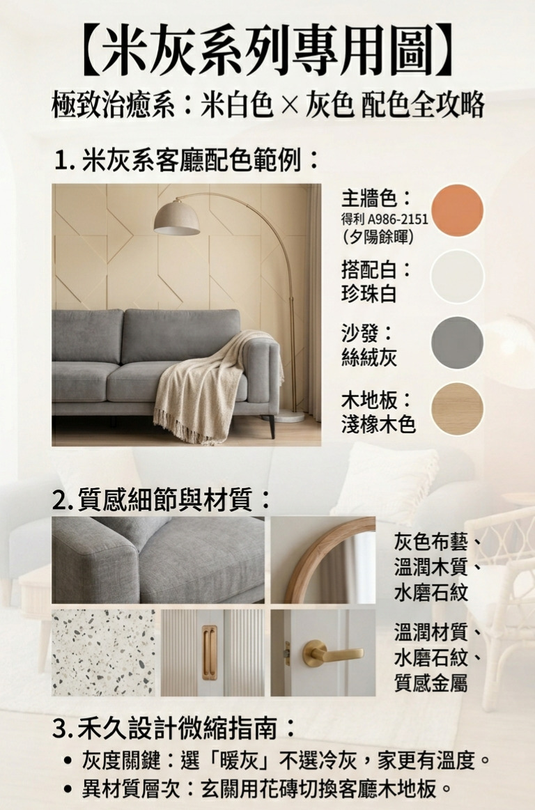
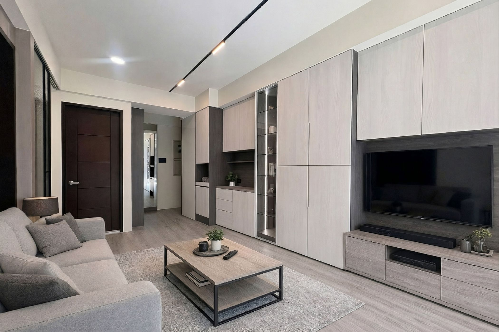
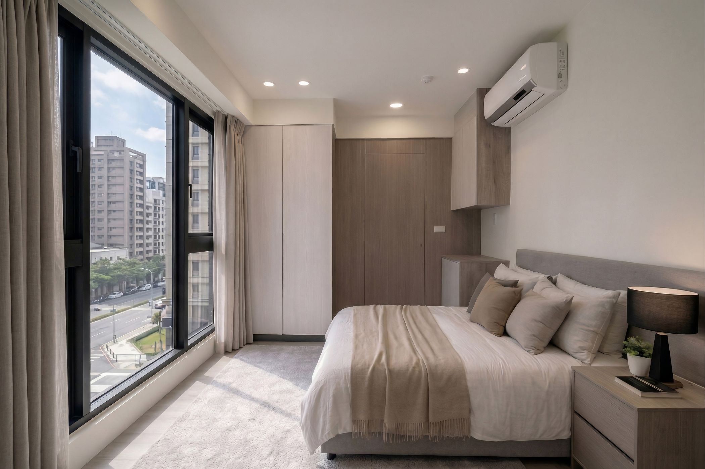
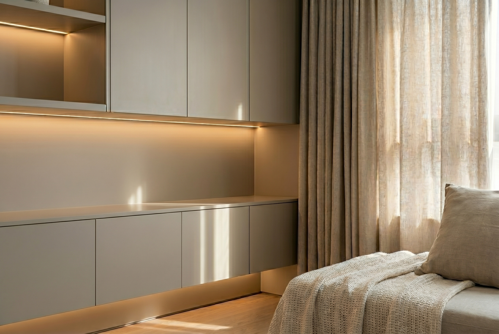

許多屋主在追求北歐風（Scandinavian）或極簡風格時，往往面臨一個兩難：想要灰色牆面的俐落簡約，卻又擔心大面積的灰色顯得冷冰冰，甚至像是一座未完工的水泥工地。
在禾久室內設計的執案經驗中，我們發現「冷暖」是決定空間質感的關鍵。我們推崇的並非純粹的冷灰，而是介於灰色與米色之間的「暖灰色（Greige）」。
這是一個兼具灰色穩定感與米色溫潤感的完美平衡點，也是我們打造 Japandi（日式極簡 x 北歐風）美學的核心關鍵。


一、 暖灰與米白的平衡藝術：空間的高級感，藏在「色溫」裡
色彩不僅是視覺的呈現，更是空間情緒的開關。我們透過色彩的冷暖對話，定義出 Japandi 風格的精髓：
- 暖灰色（Greige）——空間的沉穩基底： 作為基底，它是灰色與米色的完美交集。它消弭了純灰的生硬，讓牆面在自然光下顯得潔淨清爽，在夜間的暖光投射下，又能折射出溫潤的奶咖調，賦予空間極致的沈穩感。
- 奶油米白（Cream）——空間的呼吸來源： 若全屋使用單一色號，空間便會喪失層次。我們靈活運用奶油米白在櫃體、層板細節與過渡牆面。這種明度的對比，不僅打破了視覺的單一，更讓色彩變得輕盈，賦予空間柔和的呼吸感。

二、 禾久設計的「暖灰 × 米白」黃金配方表
想要精緻且耐看的空間，我們建議掌握「同色系、異材質」的堆疊法則。為了讓色彩運用更具參考價值，禾久室內設計整理了一份專屬配方：
這份配方表展示了我們在實案中的選色邏輯：以得利 A986-2151 為主調，透過「絲絨灰」的家具與「淺橡木」地坪，將冷暖交織出最舒適的生活觸感。同時，我們強調材質的轉換（如玄關花磚與木地板的銜接），讓極簡空間不失豐富細節。


三、 公私領域的色彩心理學：客廳與臥室的視角轉換
一個好的設計，懂得隨機能變換色彩的重心，讓色彩為您的生活品質把關。
- 客廳（公領域）：沈穩的暖灰定調。 我們以「暖灰」作為公領域的定調，這份沈穩，能穩定居住者的心緒，讓家成為最好的心靈後盾。
- 臥室（私領域）：溫柔的奶油米白。 進入臥室，我們將色彩的重力下移，擴大「奶油米白」與「淺橡木」的比例。這是禾久設計為屋主規劃的心理轉換空間：純淨、清透且毫無負擔。在這裡，淺橡木地板的溫潤焦糖色澤成為主角，讓疲憊歸家的人，在溫暖包裹下得到最深層的療癒。


四、 結語：為您量身打造的色彩頻率
設計不再只是單純的顏色塗刷，而是光影與生活共譜的優雅節奏。我們在櫃體與層板間嵌入柔和的線性暖光，搭配亞麻窗簾與織品，讓暖灰與米白在光影下產生細微的色彩暈染，讓高級感自然而生。
色彩沒有標準答案，只有最適合居住者的頻率。您也嚮往這樣溫潤療癒的 Japandi 風格嗎？每一種色彩的微調，都是禾久室內設計為您量身打造的專屬故事。歡迎諮詢禾久室內設計，讓我們為您規劃專屬的居家空間色譜。
